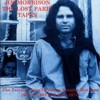

| THE LAST FAREWELL (Double
CD) Vivid Sound Productions VSP 51001/2, Italy
1994 |
Disc One: 1.Roadhouse Blues/
2.Little Red Rooster/ 3.Soul Kitchen/ 4.Break On
Through/ 5.Mystery Train/ 6.Money/ 7.Rock Me
Baby/ 8.Ship Of Fools/ 9.Crawling King Snake/
10.The End
Disc Two: 1.Who Do You Love/
2.Someday Soon/ 3.Peace Frog/ 4.Alabama Song-Back
Door Man- Five To One/ 5.Light My
Fire-Fever-Summertime-St.James Infirmary-Light My
Fire/ 6.Build Me A Woman/ 7.When The Music's Over
|
| Sources: Disc One: 1=Pacific National
Exhibition Coliseum, Vancouver, Canada, June 6th,
1970; 2= Center Coliseum, Seattle, June 5th,
1970; 3= Felt Forum, New York, January 18th,
1970, late show; 4=Felt Forum, New York, January
18th, 1970, early show; 5= same as #2; 6-7= same
as #1; 8-9= same as 3&4 10= same as 1. A copy
of Rarities And Few (IBR 2325); Disc Two: 1=
Pacific National Exhibition Coliseum, Vancouver,
June 6th, 1970; 2= Center Coliseum, Seattle, June
5th, 1970; 3-4= Felt Forum, New York, January
18th, 1970, late show; 5=same as 1; 6=same as
3-4; 7=same as 1. A copy of Collectors Items (IBR
2395). |
| Soundquality: |
 to to |
| Rarity Of Material: |
|
| Visual Attractiveness |
|
Great Jim Morrison photo on the cover. As I've said,
it's good to hear just 1970's concerts on it. Although
the labels are different, the double set was probably
made by the same bootlegger. Congratulations to the
bootleggers: this is the double live box I will have with
me on holidays, along with the official In Concert
and my Discman. The box certainly is one of the best
compilations available. Recommended.
LIBERATION (CD)
Strange Days Records SDCD 001, Germany 1995 |
| 1.Build Me A Woman/ 2.Wild Child/
3.Wintertime Love/ 4.Wishful Sinful/ 5.The Soft
Parade/ 6.Texas Radio And The Big Beat (cover
says The WASP)/ 7.Love Me Two Times/ 8.Alabama
Song/ 9.When The Music's Over/ 10.The Unknown
Soldier/ 11.Mystery Train/ 12.Someday Soon/
13.Frederick/ 14.Insane (cover says Not To Touch
The Earth)/ 15.The End |
| Sources: 1,4+5=Critique, PBS TV Show,
WNET, New York, May 13th, 1969; 2=recording
session, spring 1968 (exact date unknown);
3=official CD Waiting For The Sun, digitally
remastered version with just one vocal track;
6-9=Copenhagen TV Studio, Copenhagen, Denmark,
September 17th, 1968; 10=from the official album
Waiting For The Sun; 11+12=Center Coliseum,
Seattle, June 5th, 1970; 13=Feast Of Friends
movie, 1968; 14=Demo Acetate, World Pacific
Studios, Los Angeles, September 2nd, 1965; 15=Now
Explosion CBC TV Show, O'Keefe Centre, Toronto,
Canada, August 8th, 1967. Tracks 1,2,4,5,10+13
were copied from the official video The Soft
Parade; track 6+7 are from the official albums
Alive She Cried and/or In Concert; all other
tracks copied from other bootlegs. |
| Soundquality: |
|
|
|
|
|
|
| Rarity Of Material: |
|
|
|
|
|
| Visual Attractiveness: |
|
|
|
|
|
A professional design and a good sound does not
necessarily mean an interesting content. The material on
this CD has been published before, and for a bootleg
there's too much official stuff included. Far too much!
All fans have In Concert, and most fans have the
video The Soft Parade. That's why (of course) the guys
from Strange Days Records intentionally did not
mention the sources. Pity! I know that many of you have
bought the CD because of the nice design. It looks
interesting, indeed.
LIGHT MY FIRE/LIVE 1968
(CD)
On Stage Records CD/ON 2299, Italy 1994 |
| 1.Five To One/ 2.Mack The Knife-Alabama
Song/ 3.Back Door Man/ 4.You're Lost Little Girl/
5.Love Me Two Times/ 6.When The Music's Over/
7.Wild Child/ 8.Money/ 9.Wake Up-.Light My Fire/
10.The End/ 11.The Unknown Soldier |
| Sources: Tracks 1-10= Konserthuset,
Stockholm, September 20th, 1968, entire second
show; track 10= same as 1-9, but taken from the
first show. A copy of Apocalypse Now (Kiss The
Stone KTS 267). |
| Soundquality: |
|
| Rarity Of Material: |
|
| Visual Attractiveness: |
|
This release has a different cover than Apocalypse
Now using two of Frank Lisciandro's photos. The
soundquality is absolutely the same. So get either this
or that one.
LIGHT MY FIRE (3 CD Box)
Starlife ST 3606, Luxembourg/Germany 1991 |
Disc One (THE DOORS):
1.Light My Fire/ 2.Little Red Rooster/ 3.The
Unknown Soldier (cover says Unknow Soldier -
sic)/ 4.Moonlight Drive-Horse Latitudes (cover
says Moonlight Drive A Horse Latitudes);
5.Spanish Caravan/ 6.You Make Me Real
Disc Two (LIVE IN LOS ANGELES):
1.Moonlight Drive/ 2.Alabama Song/ 3.Horse
Latitudes/ 4.The Unknown Soldier/ 5.When The
Music's Over/ 6.Five To One/ 7.Back Door Man/
8.The End/ 9.Moonlight Drive/ 10.Light My Fire
Disc Three (THE DOORS OF HEAVEN):
1.People Are Strange/ 2.Light My Fire/ 3.Take It
As It Comes/ 4.Alabama Song/ 5.Love Me Two Times/
6.Break On Through/ 7.End Of The Night/
8.Moonlight Drive/ 9.I Looked At You/
10.Twentieth Century Fox/ 11.Soul Kitchen/
12.Back Door Man/ 13.The Crystal Ship/ 14.Unhappy
Girl |
Sources: Disc One - a copy of The
Doors (Sakkaris Records Ltd., History Of Records
HR 52016).
Disc Two - 1-8=Hollywood Bowl, Los Angeles, July
5th, 1968, from official video Live At The
Hollywood Bowl; 9+10=Jonathan Winters TV Show,
CBS Studios, Los Angeles, December 27th, 1967.
Disc Three - from the official CDs The Doors and
Strange Days. |
| Soundquality: |
to |
| Rarity Of Material: |
|
| Visual Attractiveness |
|
The three CDs are presented in a midprice hardbox
containing 3 CDs with individual covers. All 3 CDs are
also available individually as "nice price
releases". Because of high quality sources the
soundquality of the complete box is excellent. I would
recommend this box only for hard core fans, who have got
to have everything. All you others out there should
better save your money for something else. By the way,
just a few copies were given away in the box. Dealers
took the box off, in order to make more money on the
individual CDs. That's business.
LIGHT MY FIRE (CD)
Alegra (Sarabandas srl), CD 9003, Italy 1995 |
| 1.Light My Fire/ 2.Dead Cats, Dead
Rats-Break On Through #2/ 3.Build Me A Woman/
4.Alabama Song-Back Door Man-Five To One/
5.Roadhouse Blues/ 6.When The Music's Over/
7.Love Me Two Times/ 8.The Unknown Soldier |
| Sources: 1-4=official album In
Concert; 5=Felt Forum, New York, January 17th,
1970, late show; 6+8=official video Live At The
Hollywood Bowl; 7=Konserthuset, Stockholm,
Sweden, September 20th, 1968, early show. |
| Soundquality: |
to |
| Rarity Of Material: |
|
| Visual Attractiveness |
|
Hey guys, that's Val Kilmer on the cover, not Jim
Morrison. Do they want to make us believe Val sang all
those songs? If that wasn't enough, this uninteresting CD
presents very known material. Another compilation
everybody should forget very quickly.
LIGHT MY FIRE (CD)
I Miti Del Rock Live, MRL 014, Italy 1993 |
| 1. Soul Kitchen/ 2. Gloria/ 3.Light My
Fire-Fever-Summertime/St.James Infirmary-Light My
Fire/ 4. Little Red Rooster/ 5. Who Do You Love/
6. Rock Me Baby/ 7. Moonlight Drive |
| Sources: 1,2+7= Matrix Club, San
Francisco, March 10th, 1967; 3-6= Pacific
National Exhibition Coliseum, Vancouver, Canada,
June 6th, 1970. |
| Soundquality: |
to |
| Rarity Of Material: |
|
| Visual Attractiveness |
|
This free CD (or cassette) gets into collector's hands
only when you buy the Italian magazine I Miti Del Rock,
which is a kind of encyclopedia in God-Knows-How-Many
parts. Well, issue #14 comes in a clear plastic bag,
looks very psychedelic, contains this CD and a 4-page Jim
Morrison special called Il Re Lucertola (The
Lizard King). Check your Italian connections: for just
10.900 Lira (CD version; about $7) or 6.900 Lira for the
cassette version it is worth to get, although the tracks
on this bootleg CD are nothing special at all. It just
looks nice, and it's cheap.
LIGHT MY FIRE (CD)
Sarabandas CD 12015, Italy 1992 |
| 1.Roadhouse Blues/ 2.Light My
Fire-Graveyard Poem/ 3.Love Me Two Times/
4.Moonlight Drive-Horse Latitudes)/ 5.You Make Me
Real/ 6.The Unknown Soldier/ 7.Gloria/ 8.Little
Red Rooster/ 9.The End |
| Sources: Official CD In Concert |
| Soundquality: |
|
| Rarity Of Material: |
|
| Visual Attractiveness: |
|
Another CD called Light My Fire! But the sound
is excellent - no wonder! This is nothing else but an
Italian compilation from the official Elektra double CD In
Concert, and it has got an ugly drawing of Jim on the
cover sheet. And of course, this is just another Italian
rip-off. URGH!
LIGHT MY FIRE (Double CD)
THE EASY RIDER GENERATION IN CONCERT
The Easy Rider Years 930165, Italy 1993 |
Disc One: 1.Light My
Fire-Graveyard Poem-Light my Fire (cover just
says Light My Fire)/ 2.Break On Through #2/
3.Build Me A Woman/ 4.Roadhouse Blues/ 5.When The
Music's Over/ 6.Love Me Two Times/ 7.The End.
Disc Two: 1.Who Do You Love/
2.Soul Kitchen/ 3.Alabama Song/Back Door Man/
Five To One/ 4.Unknown Soldier/ 5.Moonlight
Drive/ 6.Wild Child/ 7.Love Street/ 8.The
Celebration Of The Lizard |
Sources: Disc One - 1= first published
on the official album Alive She Cried, later on
In Concert; 2-3= first published on the official
album Absolutely Live, later on In Concert; 4=
from a bad tape copy of The Doors' Felt Forum
concert, January 17th, 1970, late show; 5= from
the official album Live At The Hollywood Bowl; 6=
from bootleg CD The Stockholm Tapes (Document
Records DR 010), Konserthuset, Stockholm, Sweden,
September20th 1968; 7= from the official video
Live At The Hollywood Bowl, later on In Concert.
Disc Two - 1-2= first published on the official
album Absolutely Live, later on In Concert; 3=
Medley from the video Live At The Hollywood Bowl,
on jacket labelled as 3 individual songs; 4= same
as 3; 5= from official album Alive She Cried,
later on In Concert; 6-7= from bootleg CD The
Stockholm Tapes (Document Records DR 010),
Konserthuset, Stockholm, Sweden, September 20th,
1968; 8= from a bad tape copy of The Doors' Felt
Forum concert, New York, January 18th, 1970, late
show. |
| Soundquality: |
to |
| Rarity Of Material: |
|
| Visual Attractiveness: |
|
Welcome back to the selection of needless bootlegs. A
serious fan already has the official live albums and
videos, and, if you own the New York Blues bootleg
CD (Document Records DR 033), you already have the Felt
Forum tracks in better quality. Above all, ALL songs on
this double CD-set are in MONO (label says stereo!),
although perfect stereo sources are available, even for
Italian bootleggers. So what? The cover looks interesting
and professional, but is also available with other
artists, and the set is sold in big supermarkets over
here for just a mere $8. If it's not for your own
collection, have the thing recycled for some better
results.
LION TAVERN (CD)
International Broadcasting Recording IBR 2245,
Italy 1993 |
| 1. Roadhouse Blues/ 2. Back Door Man-Five
To One/ 3.When The Music's Over/ 4. Who Do You
Love/ 5. Light My Fire-Fever-Summertime-St.James
Infirmary-Light My Fire/ 6.The End |
| Sources: Pacific National Exhibition
Coliseum, Vancouver, Canada, June 6th, 1970;
original source is a Westwood One radio show. A
copy of Feel The Blues (American Concert Series
ACS 024). |
| Soundquality: |
|
| Rarity Of Material: |
|
| Visual Attractiveness: |
|
Fade in, fade out. Thanks, bootleggers, for this
bootleg copy of the horrible bootleg CD Feel The Blues
(American Concert Series ACS 024). If you want to have
the best quality of the same material, get Live In
Vancouver (Sounds Alive SA 24.020). Avoid Lion
Tavern and you'll be even more happy because you miss
its ugly cover. A rip-off. Fade out.
LIQUID NIGHT (CD)
Screaming Butterfly Records SBR 3169, 1996 |
| 1.Back Door Man-Five To One/ (cover adds
"Fun Rap" between track 1 and 2)/
2.Touch Me (cover says "Touch Me
attempt")/ 3.Love Me Two Times/ 4.When The
Music's Over/ 5.Wake Up-Light My Fire/ 6.Who
Scared You/ 7.Spanish Caravan/ 8.Spanish Caravan/
9.Wild Child/ 10.Touch Me/ 11.The Unknown Soldier |
| Sources: 1-5=Dinner Key Auditorium,
Miami, March l, 1969 (complete performance,
audience recording), copied from Live in Miami
(RTW Records 004); 6-10= Los Angeles Forum,
Inglewood, CA, December 14, 1968 (audience
recording); 11=Hollywood Bowl, Hollywood, CA,
July 5, 1968 (audience recording!). Cover says
track 11 was from the L.A.Forum concert which is
not true. |
| Soundquality: |
|
|
|
|
|
|
| Rarity Of Material: |
to |
|
|
|
|
| Visual Attractiveness |
|
|
|
|
|
Nobody really knows where this CD comes from. Let's
assume it was from Czech. But that really doesn't matter.
Although many fans already might own a copy of the famous
Live In Miami CD (RTW Records 004) which is now
deleted - I rarely see a copy of it on record fairs -
(check the review of the Live In Miami CD in The
Doors Quarterly Magazine #28) this CD is recommended.
Just notice that there are 5 track that were never before
published on a record. Also - up till now (with the
exception of Spanish Caravan on the Stages
4-CD-Box) there is no audience recording available on
record which was taped at the Hollywood Bowl concert.
I think it was a good idea to put another live version of
Touch Me on this CD to check how the song sounded
live in concert - remember: in Miami Jim cut singing the
song at the very beginning and started to do his rap
(re-read The Doors Quarterly 32 for the complete
transcript of the tape). The version from the L.A.Forum
concert is at full speed, full power. Unfortunately,
"stronger than dirt" is almost
inaudible. I love Jim's intonation of the final line in Wild
Child, which is as strong as ever: "DO YOU
REMEMBER WHEN WE WERE IN AFRICA?" Above all, on
this CD there's a superrare live version of Who Scared
You, a song which is - up to this date - never even
published on an official Elektra CD. Great song! The CD
has got a couple of rare Miami photos in the booklet, the
a copy of the liner notes from Live In Miami plus
- under the clear tray - some more tear-out pictures,
obviously inspired from the inner cover of the original
Soft Parade vinyl LP from the USA. Recommended!
LIVE 1968-1969 (CD)
Ricordi International CDOR 9131, Italy 1991 |
| 1.Light My Fire/ 2.Little Red Rooster/
3.The Unknown Soldier (cover says Unknow
Soldier)/ 4.Moonlight Drive-Horse Latitudes
(cover says ...& Latitudes)/ 5.Spanish
Caravan/ 6.You Make Me Real |
| Sources: The Doors' official (deleted)
CDs Alive She Cried (Tracks 2,4 and 6) and Live
At The Hollywood Bowl (Tracks 1,3 and 5), later
on the official album In Concert. A copy of The
Doors (Sakkaris Records Ltd., History Of Records
HR 52016). |
| Soundquality: |
|
| Rarity Of Material: |
|
| Visual Attractiveness: |
|
A very rare, but just 28 minutes long Italian
compilation bootleg from official CDs. If you are a
collector, it might take you years to get a copy of this
CD. If you have In Concert on CD, you certainly do not
need to look for this one. Originally this was a copy of
a Targa Records LP from Italy, which got copied by
Sakkaris Records first on CD, afterwards on CD. It got
heavily distributed by Starlife, who copied the Sakkaris
Record in cover and disc. What a mess!
LIVE (CD)
Rainbow CDRBW 3249, Italy 1993 |
| 1.Roadhouse Blues/ 2.Break On Through/
3.Love Me Two Times/ 4.When The Music's Over/
5.Light My Fire/ 6.The End |
| Sources: 1,2,6= Felt Forum, New York,
January 17th, 1970, late show; 3,4,5=
Konserthuset, Stockholm, Sweden, September 20th,
1968, late show. A copy of Jim Morrison's Doors
(Rockstars In Concert 6127062). |
| Soundquality: |
|
| Rarity Of Material: |
|
| Visual Attractiveness: |
|
It is easy to copy an existing bootleg, wrap a
different cover aroud it and distribute it among fans as
it was a new release. After reading this book no fan can
be fooled again by a silly bootlegger. Simply avoid this
release by Rainbow.
LIVE (CD)
The Music's Over Lizard-333-TMO, Japan 1995 |
| 1.Soul Kitchen/ 2.Back Door Man/ 3.Five To
One/ 4.Break On Through/ 5.The Crystal Ship/
6.Texas Radio & The Big Beat/ 7.Hello I Love
You/ 8.Moon- light Drive/ 9.Money/ 10.When The
Music's Over/ 11.Wake Up/ 12.Light My Fire/
13.Who Scared You/ 14.(You Need Meat) Don't Go No
Further |
| Sources: 1-11= Memorial Coliseum,
Dallas, Texas, July 9, 1968; 12+13 were taken
from the official Elektra album Weird Scenes
Inside The Goldmine. |
| Soundquality: |
to |
| Rarity Of Material: |
|
| Visual Attractiveness: |
|
In 1968 The Doors gave 73 concerts but only a few were
circling among collectors on audience or TV tapes. The
concert on this CD was not around for about 27 years but
it must have gotten into the hands of a Japanese
bootlegger who put it out on CD. Surprisingly enough,
there's no mention of the venue, city or date on the CD
or the coversheet. When I got a copy of the CD I thought
at first glimpse it was the Frankfurt tape plus tracks
recorded in Stockholm but it wasn't. In fact, I had never
had any notice of the existence of this concert on tape.
For the band, it was one of their standard concerts they
did in mid 1968 taped just before the release of their
third album, Waiting For The Sun (which was put
out 3 days later).
Almost all versions of the tunes are similar to the ones
published on The Night On Fire and The
Stockholm Tapes. But there's one more thing you'll
certainly notice: Jim is in a good mood (different in
Frankfurt about two months later), his musicians are
excellent (as usual), and the concert was full of energy.
Just listen to the different ending of Break On
Through. Wow - never heard that kind of ending before
with any other version. Same energy goes with Hello I
Love You. No certain other song variations are to be
heard. I never trust singers saying, "So what do
you guys wanna hear now?", 'cos every time one
of their hits follows, as previously planned by the band.
So Jim is not different from any other artist, and his
question is followed by a driving version of Light My
Fire. Unfortunately there's a fade-out/fade-in in the
middle of the organ-solo.
First time on bootleg in excellent recordings - Who
Scared You and the bluesy live-in-the-studio version
of (You Need Meat) Don't Go No Further, the latter
sung by Ray Manzarek with Jim in the background during
the L.A.Woman rehearsals. Both songs have been
bootlegged before but from scratched vinyl copies of the Weird
Scenes Inside The Goldmine double album or radio
shows. On this Japanese bootleg both songs are excellent.
In total - a good new CD; not really exciting but
previously unpublished rare material.
LIVE (CD)
DV More Record CD DV 5835, Italy 1995 |
| 1.Build Me A Woman/ 2.Peace Frog/
3.Crawling King Snake/ 4.The End/ 5.Roadhouse
Blues/ 6.Ship Of Fools/ 7.Soul Kitchen/ 8.Alabama
Song-Back Door Man-Love Hides-Five To One |
| Sources: 1-6=Felt Forum, New York,
January 17th, 1969, second show; 7-8=official
album Absolutely Live, later on In Concert. |
| Soundquality: |
|
|
|
|
|
 |
| Rarity Of Material: |
|
|
|
|
|
| Visual Attractivenes: |
|
|
|
|
|
A mediocre Felt Forum CD. Interesting enough: tracks 7-8
were mixed down so that they actually sound like track
1-6. Of course these are the versions Paul Rothchild cut
for the official live album. Not interesting at all.
LIVE - VOL.2 (CD)
Mainline Music, SW 51, ?, 1995 |
| 1.Touch Me/ 2.Back Door Man/ 3.Light My
Fire/ 4.When The Music's Over/ 5.The End/
6.Money/ 7.Break On Through/ 8.I'm A King Bee/
9.Rock Me Baby |
| Sources: 1=Smothers Brothers Comedy
Hour, Los Angeles, December 4th, 1968;
2,3,6-9=Matrix Club, San Francisco, March 7th and
10th, 1967; 4+5=Holly- wood Bowl, Los Angeles,
June 5th, 1968, from the official video Live At
The Hollywood Bowl. A copy of When The Music's
Over (Great Dane Records GDR CD 9114). |
| Soundquality: |
to |
| Rarity Of Material: |
|
| Visual Attractiveness: |
|
A copy of a compilation CD. The sound is still okay,
but the CD does not come with a nice and informative
booklet but with another horrible Unlicensed stamp
across Jim's face. This compilation is definitely not
worth the money. There is a Vol.1 out, but it was not
available for this book. For a CD like this it really
doesn't matter.
LIVE AT THE MADISON SQUARE
GARDEN NEW YORK CITY; N.Y. ON FEBRUARY 1st, 1970
(CD in paper cover)
Great Dane Records CD 8905, Italy 1989 |
| 1.Roadhouse Blues/ 2.Alabama Song-Back
Door Man-Five To One |
| Sources: Felt Forum, January 17th,
1970, second show. Cover says Madison Square
Garden, February 1st, 1970, which is not true. |
| Soundquality: |
|
|
|
|
|
|
| Rarity Of Material: |
|
|
|
|
|
| Visual Attractiveness: |
|
|
|
|
|
This CD in a black paper box came with a book called The
Bootleg Guide containing almost all Doors vinyl
bootleg releases till 1989 including photos of their
covers. The book was okay at the time of its release, but
the CD wasn't. Wrong date, wrong venue (Well - the Felt
Forum was a smaller venue inside Madison Square Garden).
That's bad!
LIVE AT THE MATRIX 1967
(CD)
Black Panther BPCD 029, Italy/Japan 1989 |
| 1.People are Strange/ 2.Alabama Song/
3.Crystal Ship/ 4.Twentieth Century Fox/
5.Moonlight Drive 6.Summer's Almost Gone/
7.Unhappy Girl/ 8.Back Door Man/ 9.My Eyes Have
Seen You/ 10.Soul Kitchen/ 11.Get Off My Life/
12.Crawling King Snake/ 13.I Can't See Your Face
In My Mind |
| Sources: Matrix Club, San Francisco,
March 7th, 1967, first and second set. A copy of
Crawling King Snakes (Backtrax 04-88004). |
| Soundquality: |
|
| Rarity Of Material: |
|
| Visual Attractiveness: |
|
This CD has the most horrible cover of all live CDs
ever! Shivvvvvvvvvver! No further comments. Black Panther
was an Italian label that printed their records in
Switzerland in the beginning. Those here were made for
the Japanese market.
LIVE AT THE SEATTLE
POPFESTIVAL 06-07-70 (CD)
Trade Mark Of Quality TMOQ 01, USA 1993 |
| 1.Back Door Man-Love Hides-Back Door Man/
2.Roadhouse Blues/ 3.When The Music's Over/
4.Mystery Train Jam: People Get Ready-Baby Please
Don't Go-Mystery Train-Crossroads (cover says
Train Jam)/ 5.Break On Through/ 6.Someday Soon |
| Sources: Center Coliseum, Seattle,
June 5th, 1970. Not the complete concert. |
| Soundquality: |
|
| Rarity Of Material: |
|
| Visual Attractiveness: |
|
A jewel box, 2 simple yellow paper sheets (xeroxed)
and a simple photo from The Doors' Aquarius concert is
not a nice outfit for a good CD like this one (the first
version was even more simple: they just put the CD into a
little white paper jacket and glued a yellow paper on
it), but it's one of the very few and rare US bootlegs.
And a good one! No, folks, not the complete
concert, but even if you have the Flashback CD June
5th 1970 - Live In Seattle, this one is interesting!
Why? Just check the 28 minute (!!) version of Mystery
Train. The longest live song ever released on a Doors
disc, officially and unofficially! Check When The Music's
Over (about 21 minutes long!), which was not on the
Flashback version (they had When The Music's Over
and The End from Vancouver on their CD,
remember?). Unfortunately this CD misses Five To One
and the Hitler-Intro. And - they put a wrong date
on the cover sheet. But do not worry if you are unable to
find this CD on European record fairs, because there is
an alternative European version of the Seattle concert
called Jim's Alive - The Ultimate Seattle Tapes
(Tuff Bites TB 94.1009) which is even better and more
complete than this American CD. The producer who calls
his company Trade Mark Of Quality has - by the way -
nothing to do with the legendary vinyl bootlegger of the
early Seventies, who carried the same name.
THE LIVE DOORS (CD)
Black Panther BP-075, Japan 1992 |
| 1.My Eyes Have Seen You/ 2.Soul Kitchen/
3.I Can't See Your Face In My Mind/ 4.Summer's
Almost Gone/ 5.Money (cover says I Want Some
Money)/ 6.Who Do You Love/ 7.Moonlight Drive/
8.Alabama Song/ 9.People Are Strange/ 10.I'm A
King Bee/ 11.Gloria/ 12.Break On Through/
13.Summertime/ 14.Back Door Man/ 15.The End (not
complete) |
| Sources: Matrix Club, San Francisco,
March 10th, 1967. Two complete sets. The songs
are not in the original order. A copy of The Live
Doors U.S.A-March 1967 (Crocodile Records BG CD
012) with a different cover. |
| Soundquality: |
|
| Rarity Of Material: |
|
| Visual Attractiveness: |
|
Making a bootleg copy of a bootleg CD is quite silly.
Let's believe this CD was made for the Japanese market
only, right. Nobody needs this disc. All songs are
available in much better soundquality on countless other
CDs. The Japanese bootleggers produce interesting covers,
though.
THE LIVE DOORS U.S.A -
MARCH 1967 (CD)
Bulldog Records BG CD 012, Italy 1988 |
| 1.My Eyes Have Seen You/ 2.Soul Kitchen/
3.I Can't See Your Face In My Mind/ 4.Summer's
Almost Gone/ 5.Money/ 6.Who Do You Love/
7.Moonlight Drive/ 8.Alabama Song/ 9.People Are
Strange/ 10.I'm A King Bee/ 11.Gloria/ 12.Break
On Through/ 13.Summertime/ 14.Back Door Man/
15.The End (not complete) |
| Sources: Matrix Club, San Francisco,
March 10th, 1967. Two complete sets. The songs
are not in the original order. |
| Soundquality: |
|
| Rarity Of Material: |
|
| Visual Attractiveness: |
|
This was the first legalized live CD from Italy,
anyway, it is just another Matrix release. This time it
is a weird mixture of two sets the band played on the
10th of March, 1967. The soundquality could have been
much better because there were better tapes circulating
at the time of release. Recycle this disc and produce
something like The Complete Matrix Club Tapes
(Kiss The Stone KTS BX 009) with it!
THE LIVE DOORS - LIVE IN
EUROPE SEPTEMBER 1968 (2 CD Box)
Crocodile Records BGCD 245, Italy 1988 |
Disc One: 1.Five to one/
2.Break on through/ 3.When the music's over/
4.Light My Fire/ 5.The End
Disc Two: 1.Break on
through/ 2.Alabama Song-Back Door Man/ 3.The
WASP/ 4.Hello I love you/ 5.When the music's
over/ 6.Light my fire/ 7.The Unknown Soldier |
Sources: Disc One - Roundhouse,
London, England, September 7th, 1968, complete
early show.
Disc Two - Kongresshalle, Frankfurt, West
Germany, September 14th, 1968, complete early
show. |
| Soundquality: |
|
|
|
|
|
|
| Rarity Of Material: |
|
|
|
|
|
| Visual Attractiveness: |
|
|
|
|
|
Those of you who have got the bootleg LPs The Lizard
King and The Night On Fire don't need this
Double CD. The sound is very bad (the vinyl LPs sound
much better) and you can hear crackles which makes sure
that the CD master was taken from vinyl copies. There's a
tiny booklet added, showing a photo of different Doors
bootleg LPs and singles.
LIVE IN CONCERT (CD)
Topsound TS-CD 012, Spain (?) 1994 |
| 1.Little Red Rooster/ 2.Who Do You Love/
3.Light My Fire/ 4.The End/ 5.Roadhouse Blues/
6.Back Door Man-Five To One/ 7.When The Music's
Over |
| Sources: Pacific National Exhibition
Coliseum, Vancouver, Canada, June 6th, 1970. |
| Soundquality: |
|
| Rarity Of Material: |
|
| Visual Attractiveness: |
|
Considering the fact that the cover mentions Rock
Me and Money, which are not on the CD (instead
of that there are Light My Fire, The End
and When The Music's Over on the CD, which are not
mentioned on the cover), one should complain about the
fade-ins and the fade-outs and the horrible cover showing
another band but not The Doors, which make this bootleg
another rip-off fooling the fans. Avoid it!
LIVE IN LOS ANGELES (CD)
Targa Italiana srl Records & Tapes CDOR 9199,
Italy 1991 |
| 1.Moonlight Drive/ 2.The Unknown Soldier/
3.When The Music's Over/ 4.Five To One/ 5.Horse
Latitudes/ 6.Alabama Song 7.The End/ 8.Back Door
Man/ 9.Moonlight Drive/ 10.Light My Fire |
| Sources: 1-8=Hollywood Bowl, Los
Angeles, July 5th, 1968, from official video Live
At The Hollywood Bowl, very strange order of
songs, cut off versions of Horse Latitudes and
Alabama Song; 9+10=Jonathan Winters TV Show, CBS
Studios, Los Angeles, December 27th, 1967. |
| Soundquality: |
to |
| Rarity Of Material: |
|
| Visual Attractiveness |
|
This Italian release has got the same content and the
same strange cuts as Live In Los Angeles (Starlife
HRCD 52072), but in a different order of songs. Strange
days have found the bootleggers!
LIVE IN MIAMI 1969 (CD)
RTW Records 004, Luxemburg 1993 |
| 1.Back Door Man-Five To One/ 2.Touch Me/
3.Love Me Two Times/ 4.When The Music's Over/
5.Wake Up-Light My Fire |
| Sources: Dinner Key Auditorium, Miami,
March lst, 1969 (complete performance) |
| Soundquality: |
|
|
|
|
|
 |
| Rarity Of Material: |
|
|
|
|
|
| Visual Attractiveness: |
|
|
|
|
|
RTW finally produced the long-awaited Live In Miami CD,
which had been postponed since May 1992! The sound is
pretty much better than on the tapes which were
circulating among collectors. This very true historical
document of one of the worst moments in Rock'n'Roll
history shows the very fateful turning point the band had
to go through, when Jim Morrison all of the sudden got
tired of his young lion-image after having seen the
Living Theatre performance a night before he stumbled out
into the neon lights of the Dinner Key Auditorium in
Miami, Florida. On this CD there is the entire concert,
as desastrous as it happened. You can hear clearly how
forcefully Jim interrupted Touch Me after the
first few words, how he was gently speaking to the
audience during When The Music's Over, what he
repeated from the Living Theatre lyrics and what he made
up at the spot. All those interruptions, interjections,
raps; all this howling, shouting, barking - a fascinating
live experience! The sound is pretty O.K., just think of
what was happening around the tape recorder while
recording. There is no better recording of this concert
available. Live In Miami is one of the few CDs
nobody should miss! The cover shows the original artwork
of the concert poster. The booklet also contains
well-written liner notes. Recommended!
LIVE IN NEW YORK CITY (CD)
Black Panther BP-088, Japan 1993 |
| 1.Roadhouse Blues/ 2.Break On Through/
3.Ship Of Fools/ 4.Crawling King Snake/ 5.Build
Me A Woman/ 6.Peace Frog/ 7.The End/ 8.The
Celebration Of The Lizard |
| Sources: Felt Forum, New York, January
17th and 18th, 1970, late shows. Not complete. A
copy of New York 1970 (Stentor Sten 91.001). |
| Soundquality: |
|
| Rarity Of Material: |
|
| Visual Attractiveness: |
|
Instead of producing own CDs they seem to love copying
European discs for the Japanese market. So this one with
another bad cover is just a copy of a mediocre European
live CD.
THE DOORS 2 - LIVE IN NEW
YORK 1970 (CD)
Armando Curcio Editore DIR 46, Italy 1992 |
| 1.Build Me A Woman/ 2.Crawling King Snake/
3.Break On Through/ 4.The Celebration Of The
Lizard/ 5.Peace Frog/ 6.Ship Of Fools/
7.Roadhouse Blues/ 8.The End |
| Sources: 1-3,6-8=Felt Forum, New York,
January 17th, 1970, late show; 4+5=Felt Forum,
New York, January 18th, 1970, late show. |
| Soundquality: |
|
| Rarity Of Material: |
|
| Visual Attractiveness: |
|
An interesting compilation of Felt Forum tracks, not
as bad as other compilations around. But, as you know,
there are too many compilations around. The tracks
featured on this CD are available on other CDs as well.
LIVE IN SAN FRANCISCO 1967
(CD)
Golden Stars FBCD 1149, Italy 1991 |
| 1.My Eyes Have Seen You/ 2.Soul Kitchen/
3.I Can't See Your Face In My Mind/ 4.People Are
Strange/ 5.When The Music's Over/ 6.Money/ 7.Who
Do You Love/ 8.Moonlight Drive/ 9.Summer's Almost
Gone/ 10.I'm A King Bee/ 11.Gloria/ 12.Break On
Through/ 13.Summertime/ 14.Back Door Man |
| Sources: Matrix Club, San Francisco,
March 10th, 1967. |
| Soundquality: |
|
| Rarity Of Material: |
|
| Visual Attractiveness: |
|
Another copy of Matrix material, good selection,
though, (just Alabama Song and The End are
missed from their March 10th performances), but is there
anybody out there who hasn't got the Matrix tracks by
now? The cover uses a bad reproduction of a Morrison
still photo from TV. Forget this one!
LIVE IN SEATTLE (CD)
On Stage Records ON 2364, Italy 1994 |
| 1.Roadhouse Blues/ 2.When The Music's
Over/ 3.People Get Ready-Baby Please Don't
Go-Mystery Train-Crossroads (cover just says
Mystery Train)/ 4.Break On Through/ 5.Someday
Soon/ 6.Back Door Man/ 7.Little Red Rooster |
| Sources: 1-6 Center Coliseum, Seattle,
June 5th, 1970; 7= Pacific National Exhibition
Coliseum, Vancouver, Canada, June 6th, 1970. Not
the complete concert. Cover makes the impression
track 7 was from Seattle, too. |
| Soundquality: |
|
| Rarity Of Material: |
|
| Visual Attractiveness: |
|
Well, this CD got copied soon (Seattle 1970, Live
Storm LSCD 51630), and the copy is better! At least it
has a better cover. So you should better get the copy if
you really need those tracks. Get Jim's Alive - The
Ultimate Seattle Tapes (Tuff Bites 94.1009), and
you'll have the complete concert.
JUNE 5th 1970 - LIVE IN
SEATTLE (CD)
Flashback Worldproductions, 02.92.0170, Luxemburg
1992 |
| 1.Intro/ 2.Roadhouse Blues/ 3.Someday
Soon/ 4.Mystery Train (incomplete)/ 5.Break On
Through/ 6.Five To One-Back Door Man/ 7.The End/
8.When The Music's Over |
| Sources: 1-6=Center Coliseum, Seattle,
June 5th, 1970; tracks 7+8=Pacific National
Exhibition Coliseum, Vancouver, Canada, June 6th,
1970. All songs were taken from a Westwood One
radio special. Not the complete show. |
| Soundquality: |
|
|
|
|
|
|
| Rarity Of Material: |
|
|
|
|
|
| Visual Attractiveness: |
|
|
|
|
|
Ray Manzarek sued Westwood One for publishing this tape
for a radio-show and he's right: It wasn't one of the
best shows of their 1970 tours. In fact - Jim is very
unconcentrated, probably pretty drunk, the amplifiers
don't work properly (interesting rap at the beginning of
the CD). Unfortunately the original radio show featured
two songs from The Doors' Vancouver show (The End
and When The Music's Over), and the bootleggers
were silly enough to feature both songs on this CD as
well without checking. Anyway, the soundquality is
excellent stereo (thanks to Vince Treanor, former Doors
roadmanager, who taped the show and gave it to Sandy
Gibson of Westwood One who had nothing else to do than to
put it out on disc for radio stations), and it is a
perfect example of a bad Doors performance (with the
exception of Someday Soon, which unfortunately is
incomplete on this CD as well as Mystery Train).
The show is carefully remixed (I prefer it to the
original radio show!), which means you have the
impression of an uncut Doors-concert. It also has a very
nice fold-out cover. But of course, check Jim's Alive
- The Ultimate Seattle Tapes (Tuff Bites T.B.941009),
on this you'll find the complete performance with the
complete versions of all songs!
LIVE IN STOCKHOLM 1968
(Double CD)
The Swinging Pig Records TSP-CD-004-2, Luxembourg
1988 |
Disc 1: 1.Five To One/
2.Love Street/ 3.Love Me Two Times/ 4.When The
Music's Over/ 5.A Little Game/The Hill Dwellers/
6.Light My Fire./ 7.The Unknown Soldier
Disc two: 1.Five To One/
2.Mack The Knife-Alabama Song-Back Door Man/
3.You're Lost Little Girl/ 4.Love Me Two Times/
5.When The Music's Over/ 6.Wild Child/ 7.Money/
8.Wake Up-Light My Fire/ 9.The End |
| Sources: Konserthuset, Stockholm,
Sweden, September 20th, 1968. CD one has the
complete second show (The End was recorded as the
encore for this second show but is on CD two). CD
two has the complete first show. |
| Soundquality: |
|
|
|
|
|
|
| Rarity Of Material: |
|
|
|
|
|
| Visual Attractiveness: |
|
|
|
|
|
This double CD box was made in Germany, has got a
Luxembourg address on it and was distributed by mail
order first. Later it appeared on record fairs and became
a massive seller. The box has a really nice cover: a
colour shot from their Roundhouse concert. Both concerts
were taped in their entirety and broadcasted three times
in Sweden over the radio. So this CDs contain both uncut
Stockholm concerts, more than 130 minutes of music.
Unfortunately both CDs have got not the same soundquality
as the bootleg triple LP box with the same name (Swinging
Pig Records). The soundquality of The Stockholm Tapes CD
(Document Records DR 010) is better, but this one has
just got the best tracks of both concerts. Anyway, forget
the loss of some heights in the sound and some bubbles in
the bass: the Live In Stockholm box is another
item for the record collection of each Doors fan. Robby
Krieger of The Doors sued Swinging Pig Records for this
box. As a result it had to disappear from the markets,
but appeared again in 1994 with the same cover but in a
slim box.
LIVE IN STOCKHOLM (2 CD set
in different boxes)
Black Panther BPCD 030 and BPCD 031, Italy/Japan
1989 |
Disc One: 1.Five To One/
2.Mack The Knife-Alabama Song-Back Door Man/
3.You're Lost Little Girl/ 4.Love Me Two Times/
5.When The Music's Over/ 6.Wild Child/ 7.Money/
8.Wake Up-Light My Fire/ 9.The End
Disc Two: 1.Five To One/
2.Love Street/ 3.Love Me Two Times/ 4.When The
Music's Over/ 5.A Little Game/The Hill Dwellers/
6.Light My Fire./ 7.The Unknown Soldier |
| Sources: Konserthuset, Stockholm,
Sweden, September 20th, 1968. Volume two has the
complete second show (The End was recorded as the
encore for this second show but is on volume
one). Volume one has the complete first show.
Copies of Live In Stockholm 1968 (Double CD, The
Swinging Pig Records TSP-CD-004-2) |
| Soundquality: |
|
|
|
|
|
|
|
|
| Rarity Of Material: |
|
|
|
|
|
|
| Visual Attractiveness: |
|
|
|
|
|
|
Black Panther Records should win a prize for the worst
covers ever. It seems those bootleggers love drawings.
Well, kindergarten kids would have done better covers.
Avoid these and leave them for Japanese fans - both CDs
were made for the Japanese market.
LIVE IN STOCKHOLM 1968 (CD)
Armando Curcio Editore DIR-04, Italy 1991 |
| 1.Light My Fire/ 2.Mack The Knife-Alabama
Song/ 3.Back Door Man/ 4.You're Lost Little Girl/
5.Love Me Two Times/ 6.When The Music's Over/
7.The End |
| Sources: Konserthuset, Stockholm,
Sweden, September 20th, 1968, first show. |
| Soundquality: |
|
| Rarity Of Material: |
|
| Visual Attractiveness: |
|
Another Stockholm CD with a nice cover, but some
sloppy cuts between the songs. It's not the complete
concert, and it was published as an accompanying CD for
an Italian Dictionary Of Rock (good idea). What
else? Yes, you surely have all these tracks. For the
hard-core collector only - or for the ones who like
collecting nice covers. I've seen designs like this done
with airbrush on American T-shirts sold in Venice ,
California ...
LIVE IN VANCOUVER (CD)
Sounds Alive SA 24.020, Germany 1994 |
| 1.Roadhouse Blues/ 2.Back Door Man-Five To
One/ 3.When The Music's Over/ 4.Little Red
Rooster/ 5.Who Do You Love/ 6.Soft Parade
Intro-Light My Fire (cover just says Light My
Fire)/ 7.The End |
| Sources: Pacific National Exhibition
Coliseum, Vancouver, Canada, June 6th, 1970
(cover says 05/06/1970) |
| Soundquality: |
|
| Rarity Of Material: |
|
| Visual Attractiveness: |
|
Many of you have Vancouver 70 or Canadian
Nights, for those this CD is nothing new. The
bootleggers packed the best songs of this glorious
concert (with Albert King) together for this CD,
carefully cutting the audience noises between the songs
to make the impression of a complete concert. It works,
and this CD sounds great. A good alternative compared to
all those other inferior Vancouver bootlegs (except the
two mentioned above). Unfortunately this isn't the
complete concert, and I wish someone would produce the
songs which were not broadcasted (Alabama Song, Love
Me Two Times) add the songs from the broadcast left
off on this Sounds Alive CD (Money, Rock Me
Baby) and do something good to our heads with a
complete Vancouver CD. For beginners of bootleg CD
collecting, this CD (almost 76 minutes long!) is a fine
intro for a mid-price.
LIVE RECORDINGS (2 CD in
two different covers)
Vol.1 (DVCD 0092) and Vol.2 (DVCD 0093)
DV MORERECORD, Italy 1991 |
Vol.1: 1. Universal Mind/
2.Unknown Soldier/ 3.Spanish Caravan/ 4.The
Celebration Of The Lizard/ 5.Close To You/ 6.You
Make Me Real/ 7.Wake Up/ 8.When The Music's Over.
Vol.2: 1.Little Red Rooster/
2.Build Me A Woman/ 3.A Little Game/The Hill
Dwellers/ 4.Light My Fire-Graveyard Poem-Light My
Fire/ 5.Moonlight Drive-Horse Latitudes/ 6.Soul
Kitchen/ 7.Who Do You Love/ 8.Break On Thru #2 |
Sources: Vol. One - 1,4,5+8 = taken
from a tape copy of the official album Absolutely
Live; 2,3+7 taken from a tape copy of the
official album Live At The Hollywood Bowl; 6 =
taken from a tape copy of the official album
Alive She Cried.
Vol. Two - 1+4 = taken from a tape copy of the
official album Alive She Cried; 2,6,7+8 = taken
from a tape copy of the official album Absolutely
Live; 3+5 = taken from a tape copy of the
official album Live At The Hollywood Bowl. |
| Soundquality: |
|
| Rarity Of Material: |
|
| Visual Attractiveness: |
|
Your stomach will start bleeding, men will lose their
balls, your heart will suffer an attack and your teeth
will fall out, if you listen to these two CDs. They are
from Italy, and all material on them stems from original
Doors Live-albums, but the sound is horrible. A constant
pumping is recognizable throughout the tracks ... simply avoid
these discs and buy the original albums. The covers show
original Doors concert posters (Cow Palace and Santa
Clara Fair Grounds) copied from bad postcards. These two
discs are absolutely not worth the money.
LIVE USA (CD)
Imtrat (imt 900.055) Germany 1991 |
| 1.Light My Fire/ 2.Touch Me/ 3.When The
Music's Over/ 4.The End/ 5.Moonlight Drive/
6.Light My Fire |
| Sources: All songs (except track 1
which was copied from the CD Orange County Suite,
Document Records) were copied from the bootleg CD
Celebrati- on (Swinging Pig Records). All are
available on other CDs in better soundquality. |
| Soundquality: |
|
| Rarity Of Material: |
|
| Visual Attractiveness: |
|
A very strange release. This firm does not take care
about quality and quantity at all. I own a horrible
Who-CD, distributed in big shopping centers. As bad as
this Who CD is this Doors CD. It is quite cheap (just
about $8,50) - and it is ugly. An average collector has
got all the material in better quality, and as you might
have guessed it, it is a must to avoid.
LIZARD KING (CD)
Crocodile Beat CB 53009, Germany 1993 |
| 1.Roadhouse Blues/ 2.Someday Soon (Cover
says Someday Soon/ Harvest Moon)/ 3.Mystery Train
(Cover says Train Coming Round The Bend)/ 4.Break
On Through/ 5.Five To One/ 6.Back Door Man/ 7.The
End/ 8.When The Music's Over |
| Sources: Center Coliseum, Seattle,
June 5th, 1970. |
| Soundquality: |
|
| Rarity Of Material: |
|
| Visual Attractiveness: |
|
The only good thing about this CD is the nice graphic
cover. You certainly do not need the songs without the
beginnings: Someday Soon starts after 12 seconds
of the song are already over! Somebody forgot to press
the start button of his cassette recorder on most of the
songs. So - although the CD was made from the original
radio show, Jim's Alive - The Ultimate Seattle Tapes
(Tuff Bites T.B. 94.1009) is much, much better. Avoid
this Lizard King, it stinks.
THE LIZARD KING (CD)
Vulture Records 002, Italy 1990 |
| 1.Five To One/ 2.Mack The Knife-Alabama
Song-Back Door Man/ 3.You're Lost Little Girl/
4.Love Me Two Times/ 5.When The Music's Over/
6.Wild Child/ 7.Money/ 8.Wake Up-Light My Fire/
9.The End/ 10.Love Street/ 11.A Little Game-The
Hill Dwellers |
| Sources: 1-8=Konserthuset, Stockholm,
Sweden, complete early show; 9-11=Konserthuset,
Stockholm, Sweden, late show (not complete). |
| Soundquality: |
|
| Rarity Of Material: |
|
| Visual Attractiveness: |
|
By the time of this release it seemed that both Doors
performances at Stockholm's Konserthuset were the most
bootlegged Doors concerts along with the Matrix concerts.
So be sure that most of you readers have got both
Stockholm shows from September 20th, 1968, on vinyl or
CD. Hard core collectors might be looking for this
expensive CD just because of the nice psychedelic cover.
The quality of the recording is better on other releases.
THE LIZARD KING (VOL.1)
(CD)
Apple House Music/ Banana BAN-011-A, Australia
1993 |
| 1.Alabama Song-Back Door Man-Five To One/
2.I Can't See Your Face In My Mind/ 3.People Are
Strange/ 4.Money/ 5.Who Do You Love/ 6.Summer's
Almost Gone/ 7.I'm A King Bee/ 8.Gloria/
9.Summertime/ 10.Close To You/ 11.Rock Me Baby/
12.The Hill Dwellers/ 13.Light My Fire |
| Sources: 1=Hollywood Bowl, Los
Angeles, July 5th, 1968, from official video Live
At The Hollywood Bowl; 2-11=Matrix Club, San
Francisco, March 7th and 10th, 1967;
12.Konserthuset, Stockholm, Sweden, September
20th, 1968, late show; 13=Matrix Club, San
Francisco, March 7th, 1967. |
| Soundquality: |
to |
| Rarity Of Material: |
|
| Visual Attractiveness |
|
Needless to say (if you look at the tracklist) this
another attempt to sell standard material. This disc
looks like a Japanese release but it isn't. Also
available in a different cover: There is a big red stamp
across Jim's picture saying Unauthorised, and they
call the series The Unauthorised Recordings. The
content is exactly the same. And even more: These The
Unauthorised Recordings are available from another
company called Joker Productions - with the same design
but different photos (The Doors - Live Vol.1, Joker
Productions JOK-004-A). I also found a copy of the latter
- this time made by Grapefruit Productions (why not
strawberries or any other fruit?) with the same design
but called Light My Fire (Grapefruit Productions
GRA-050-A).
THE LIZARD KING (VOL.2)
(CD)
Apple House Music/ Banana BAN-011-B, Australia
1993 |
| 1.Moonlight Drive/ 2.Break On Through/
3.The Crystal Ship/ 4.Twentieth Century Fox/
5.Unhappy Girl/ 6.Love Street/ 7.Love Me Two
Times/ 8.The Unknown Soldier/ 9.You're Lost
Little Girl/ 10.Wild Child/ 11.Wake Up/ 12.Five
To One/ 13.The End/ 14.Touch Me/ 15.Moonlight
Drive/ 16.Light My Fire |
| Sources: 1-5=Matrix Club, San
Francisco, March 7th, 1967; 6-8=Konserthu- set,
Stockholm, Sweden, September 20th, 1968, late
show; 9-11=Konserthu- set, Stockholm, Sweden,
September 20th, 1968, early show; 12-13=Pacific
National Exhibition Coliseum, Vancouver, Canada,
June 6th, 1970; 14= Smothers Brothers Comedy
Hour, Los Angeles, December 4th, 1968, from
official video Dance On Fire; 15-16= Jonathan
Winters TV Show, CBS Studios, Los Angeles,
December 27th, 1967. |
| Soundquality: |
to |
| Rarity Of Material: |
|
| Visual Attractiveness |
|
Needless to say (if you look at the tracklist) this
another attempt to sell standard material. This disc
looks like a Japanese release but it isn't. Also
available in a different cover: There is a big red stamp
across Jim's picture saying Unauthorised, and they
call the series The Unauthorised Recordings. The
content is exactly the same. And even more: These The
Unauthorised Recordings are available from another
company called Joker Productions - with the same design
but different photos (The Doors - Live Vol.2, Joker
Productions JOK-004-B). I also found a copy of the latter
- this time made by Grapefruit Productions (why not
raspberries or any other fruit?) with the same design but
called Touch Me (Grapefruit Productions
GRA-050-B).
THE LIZARD KING (VOL.3)
(CD)
Apple House Music/Banana BAN-011-C, Australia
1993 |
| 1.Roadhouse Blues/ 2.Backdoor Man-Five To
One/ 3.Money/ 4.Rock Me Baby/ 5.Little Red
Rooster/ 6.Who Do You Love/ 7.Light My
Fire-Fever-Summertime-St.James Infirmary-Light My
Fire/ 8.The End |
| Sources: Pacific National Exhibition
Coliseum, Vancouver, Canada, June 6th, 1970. Not
the complete show. A copy of Vancouver 70
(Skeleton SKCD 1066). |
| Soundquality: |
|
| Rarity Of Material: |
|
| Visual Attractiveness: |
|
A part of the famous Vancouver concert. If you have
any of the other CDs with the same material you don't
really need this. The CD looks like a Japanese release
but it isn't. Also available in a different cover: There
is a big red stamp across Jim's picture saying
Unauthorised, and they call the series The Unauthorised
Recordings. The content is exactly the same. And even
more: These The Unauthorised Recordings are
available from another company called Joker Productions -
with the same design but different photos (The Doors -
Live Vol.3, Joker Productions JOK-004-C). Be sure there
is also a Grapefruit edition of this CD (GRA-050-C), but
it was not available at the deadline for this book.
THE LIZARD KING (VOL.4)
(CD)
Apple House Music/Banana BAN-011-D, Australia
1993 |
| 1.Back Door Man/ 2.Roadhouse Blues/ 3.When
The Music's Over/ 3.People Get Ready-Baby Please
Don't Go-Mystery Train-Crossroads (cover says
People Get Ready/Train I Ride Part 1/Baby Please
Don't Go/Train I Ride Part2/Bullfrog Blues)/
4.Break On Through/ 5.Someday Soon |
| Sources: 1-2=Pacific National
Exhibition Coliseum, Vancouver, Canada, June 6th,
1970; 3-5=Center Coliseum, Seattle, June 5th,
1970. Cover says all tracks were recorded in
Canada which is not true. Cover also mentiones
Tyson as the author of Someday Soon, but this
song was written by Jim Morrison. |
| Soundquality: |
|
| Rarity Of Material: |
|
| Visual Attractiveness: |
|
Another part of the famous Vancouver concert plus
tracks from Seattle, intentionally mislabeled. If you
have any of the other CDs with the same material you
certainly don't need this. The CD looks like a Japanese
release but it isn't. Also available in a different
cover: There is a big red stamp across Jim's picture
saying Unauthorised, and they call the series The
Unauthorised Recordings. The content is exactly the
same. And even more: These The Unauthorised Recordings
are available from another company called Joker
Productions - with the same design but different photos
(The Doors - Live Vol.4, Joker Productions JOK-004-D). Be
sure there is also a Grapefruit edition of this CD
(GRA-050-D), but it was not available at the deadline for
this book.
THE LOOK BEHIND COLLECTION
(2 CD)
LB-016, Germany 1996 (no record company
mentioned) |
Disc One: 1.Light My Fire/
2.Break On Through/ 3.Soul Kitchen/ 4.The Crystal
Ship/ 5.Twentieth Century Fox/ 6.Alabama Song/
7.Back Door Man/ 8.I Looked At You/ 9.End Of The
Night/ 10.Take It As It Comes/ 11.The End
Disc Two: 1.Hello I Love
You/ 2.People Are Strange/ 3.The Unknown Soldier/
4.My Wild Love/ 5.Summer's Almost Gone/ 6.Five To
One/ 7.Strange Days/ 8.Horse Latitudes/ 9.Love Me
Two Times/ 10.Moonlight Drive/ 11.My Eyes Have
Seen You/ 12.Wintertime Love/ 13.Spanish Caravan/
14.You're Lost Little Girl/ 15.Not To Touch The
Earth/ 16.We Could Be So Good Together |
| Sources: The official first three
Doors albums on Elektra Records, The Doors,
Strange Days and Waiting For The Sun |
| Soundquality: |
|
|
|
|
|
|
| Rarity Of Material: |
|
|
|
|
|
| Visual Attractiveness: |
|
|
|
|
|
Another unauthorized compilation of Doors songs. This
story never seems to end. Above all, this compilation has
an uninteresting cover sheet and an ugly title.
THE LOST PARIS TAPES (CD)
The Private Tapes Of James Douglas Morrison
(March 1969 and June 1971) Jomo 3.5471.1, Canada
1994 |
I.: JIM MORRISON POETRY SESSION:
FAR ARDEN: Radio Dark Night (Take 1)/ Radio Dark
Night (Take Two)/ A Vast Radiant Beach (Awake)/
Moonshine Night/ Frozen Moment By A Lake/ Bird Of
Prey/ Dawn's HWY/ Under Waterfall/ The
Hitchhiker/ Winter Photography/ Whiskey, Mystics
And Men/ Orange County Suite/ All Hail The
American Night/ Far Arden Poem/ Texas Radio &
The Big Beat #1 (Letter From Shirley)/ TALES FROM
THE AMERICAN NIGHT: The American Night/ The Holy
Sha/ Hitler/ Latino Chrome/ To Come Of Age -
Black Polished Chrome/ Search On, Man/ Indian,
Indian (Sirens And Horns Honking)/ Woman In The
Window/ A Vision Of America: From The Book Of
Days - A Vision Of America - Motel, Money,
Murder, Madness/ Earth, Air, Fire, Water/
Discovery (Angels & Sailors)/ Now Listen To
This (Texas Radio & The Big Beat #2)/ Stoned
Immaculate/ White Blind Light (Thank You, O Lord)
II.: LAST RECORDING SESSION:
Guitar Tuning & Chats/ Orange County Suite |
| Sources: I.: Jim Morrison's first
poetry session, Los Angeles, Elektra Sound
Studios, March 1969 and II.: Jim Morrison's
(presumably) last recording session recorded at a
professional recording studio, Paris, mid-June
1971, with two unknown street musicians. |
| Soundquality: |
|
|
|
|
|
 |
| Rarity Of Material: |
|
|
|
|
|
| Visual Attractiveness: |
|
|
|
|
|
The real must for everybody who is a fan and lover of Jim
Morrison's poetry. This CD contains Jim Morrison's
complete first poetry session before Paul Rothchild cut
it up into little pieces to see what could be used for
the Elektra release An American Prayer ( this
Rothchild version was stolen from his desk and used for
many bootlegs, including the LP Rock Is Dead
(Tangie Town Records), and Orange County Suite
(Document Records DR 019), to name the best ones) and
also the complete tape Jim recorded in Paris with two
unknown street musicians (see The Doors Quarterly #32
for the complete transcript). The content of both tapes
was - as rumors go - taken via DAT recorder from the
original master Jim had with him in Paris (see The
Doors Quarterly #31 for the complete story of The
Lost Paris Tapes). I had the chance to listen to the
original reel-to-reels before they were sold to a
collector in Germany and I compared the length of the
reel tape to the one on the CD - no difference.
When I say complete, I mean uncut. And this
is the most important thing about this CD - sure: some of
the poems have been published on countless bootlegs
before, but in worse quality and - cut. On this CD you
can hear Jim pouring some liquid (I guess it wasn't
mineral water) into a glass, you hear him turning pages,
lightening matches, asking how much time was left and so
on and on. On Radio Dark Night (Take 1) the
engineer (John Haeny) made a mistake (he recorded it
using a filter) so this track had to be recorded twice
(I'm surprised he didn't rewind the tape). The biggest
surprise on this CD is the uncut version of Orange
County Suite which Jim did during the poetry session.
We all know from previous releases the first part of this
swan song to Pamela Courson, but nobody ever heard the
complete recording like it was printed in Jim's poetry
collection Wilderness. It's fun to check Wilderness
and The American Night for the poems featured on
this CD. It's no fun to check what parts of the poems had
been cut out for An American Prayer, what great
material hadn't been used and what poems had been cut
together. This CD is an ideal source to see how Jim
really worked, how he intended his poetry to be cut on
tape, carefully choosing word for word, intonation and
volume of his voice. This is the real thing, fans, in
excellent quality, and the perfect addition to the
recently released official poetry album An American
Prayer.
Well, the 14-minute Paris session is a real tough one!
Undoubtedly, the band named Jomo And The Smoothies
were drunk. Or they were on another substance, nobody
knows. And they were bad! As bad as any other amateur
band being drunk in a studio. I don't know what kind of
instrument one of the guys has, certainly one using
strings to produce a sound - but he's not even able to
tune it! (Jim seems to be amused ...)
Every song the "guitarist" suggests fails - Jim
doesn't know them (I'm the singer ...). So
finally, after some funny chats, they stumble into a
weird version of Orange County Suite (compare it to the
version taped during the poetry session!). Jim forgets
the words, shouts out loud the ones he remembers, mixes
them up - booze ...
So - what's so interesting about those 14 minutes? Well,
this is most likely the last thing Jim ever recorded, and
it is probably the only thing he recorded while being in
Paris. A true document from his last days - remember, the
man died 2 weeks later! And - it wasn't a planned thing -
it was done on the spot using a pseudonym (Jomo And
The Smoothies). And - this CD was made from the
original tape (as the liner notes say), so it is in the
best quality you could imagine. And - it's new! Finally a
new, totally unpublished recording that might survive as
a piece of history in Jim Morrison's story, presented on
this CD in superb sound quality. The first pressing came
with a colour picture CD, the second pressing came with a
black and white CD. The soundquality is the same.
As the liner notes from the booklet say - this is Jim
Morrison's one and only solo album, and it's right - no
other bootleg album is better and more intense than The
Lost Paris Tapes. A nice booklet using some of Alain
Ronay's photos from a village near Chantilly (taken a few
days before Jim died) is included, and this one also
features two photos of the original boxes which preserved
the two tapes.
In general - this CD is an absolute MUST for each
fan, and it is highly RECOMMENDED!
THE LOST PARIS TAPES (CD)
The Private Tapes Of James Douglas Morrison
(March 1969 and June 1971)
Jomo 3.5471.1, Canada 1994 |
I.: JIM MORRISON POETRY SESSION: FAR
ARDEN: Radio Dark Night (Take 1)/ Radio Dark
Night (Take Two)/ A Vast Radiant Beach (Awake)/
Moonshine Night/ Frozen Moment By A Lake/ Bird Of
Prey/ Dawn's HWY/ Under Waterfall/ The
Hitchhiker/ Winter Photography/ Whiskey, Mystics
And Men/ Orange County Suite/ All Hail The
American Night/ Far Arden Poem/ Texas Radio &
The Big Beat #1 (Letter From Shirley)/ TALES FROM
THE AMERICAN NIGHT: The American Night/ The Holy
Sha/ Hitler/ Latino Chrome/ To Come Of Age -
Black Polished Chrome/ Search On, Man/ Indian,
Indian (Sirens And Horns Honking)/ Woman In The
Window/ A Vision Of America: From The Book Of
Days - A Vision Of America - Motel, Money,
Murder, Madness/ Earth, Air, Fire, Water/
Discovery (Angels & Sailors)/ Now Listen To
This (Texas Radio & The Big Beat #2)/ Stoned
Immaculate/ White Blind Light (Thank You, O Lord)
II.: LAST RECORDING SESSION: Guitar Tuning &
Chats/ Orange County Suite |
| Sources: I.: Jim Morrison's first
poetry session, Los Angeles, Elektra Sound
Studios, March 1969 and II.: Jim Morrison's
(presumably) last recording session recorded at a
professional recording studio, Paris, mid-June
1971, with two unknown street musicians. |
| Soundquality: |
|
|
|
|
|
|
| Rarity Of Material: |
|
|
|
|
|
| Visual Attractiveness: |
|
|
|
|
|
A reissue of the gorgeous 1994 release. To distinguish
the original from the reissue just check the CD: if you
have a black&white CD with no writing on it's the
reissue. The original was in color saying Made In
Canada. The soundquality is absolutely the same. For
review, check The Doors Quarterly Magazine #32. Of
course, this still is an essential recording and still a
must for each serious collector.
LOVE ME TENDER (CD)
X Extremly Rare Records ExR 001, Germany 1993 |
| 1.Roadhouse Blues (vocal rehearsal)/
2.Intro for The Soft Parade (vocal rehearsal)/
3.Whiskey, Mystics And Men/ 4.Love Me Tender/
5-10. Rock Is Dead/ 11.Someday Soon/ 12.Orange
County Suite/ 13.Wintertime Love |
| Sources: 1= outtake from Morrison
Hotel sessions; 2-10= outtakes from The Soft
Parade sessions; 11= Center Coliseum, Seattle,
June 5th, 1970, taken from bootleg LP Someday
Soon, incomplete with crackles; 12= from Jim's
poetry session, Sunset Sound Studios, March 1969,
copied from bootleg CD Orange County Suite
(Document Records DR 019), incomplete; 13= from
digitally remastered US CD Waiting For The Sun,
incomplete. |
| Soundquality: |
|
| Rarity Of Material: |
|
| Visual Attractiveness: |
|
What a CD this could have been! But greedy bootleggers
took the first available tape copy of the circulating
complete Rock Is Dead tape, added some stuff they
thought was rare and put this out in a hurry. Well,
better than nothing, of course, but Missing Links
(Memorial Records, Memorec 403) has the same material
plus more in much better sound quality. Just check the
comments for Missing Links. So I guess, dear
readers, you should better try to get Missing Links,
although the material on Love Me Tender looks
pretty interesting. I like the cover, by the way. Looks
like being an oil-painting of Jim Morrison with the same
colors Rembrandt (the Dutch painter) used ages ago.
LOVE ME TWO TIMES (CD)
Starlite CDS 51149, Italy 1993 |
| 1.Roadhouse Blues/ 2.Love Me Two Times/
3.Light My Fire (including Graveyard Poem)/
4.Gloria/ 5.Little Red Rooster/ 6.Moonlight Drive
(including Horse Latitudes)/ 7.You Make Me Real/
8.The Unknown Soldier |
| Sources: Official Elektra CD In
Concert. |
| Soundquality: |
|
| Rarity Of Material: |
|
| Visual Attractiveness: |
|
Well, to tell you the truth - I bought this CD just
for the cover, which shows a beautiful 1968 photo of Jim
taken in London. We all know the tracks well. Starlite,
by the way, is a low-price label from Italy, and many
supermarkets offer CDs made by this bootlegger. I found
my copy in France, in a shop at the freeway for a mere 40
Francs, less than $10.
|